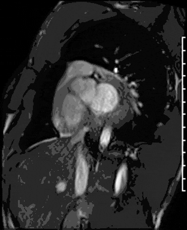
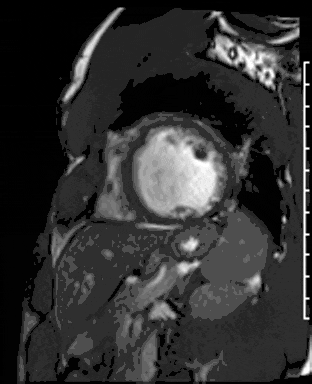
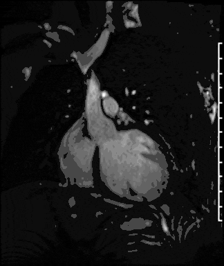

Clinical Case Conference
General Cardiology Lecture Series
Division of Cardiology, Department of Medicine, University of Illinois Chicago
2024-04-08
Introduction
Objectives
- Understand the cognitive processes involved in the case-based diagnostic reasoning
- Identify diagnostic assumptions that may lead towards case-specific biases
- Practice contextualizing clinical data in the framework of cardiovascular physiology
History & Physical
30 year old gentleman with a history of acid reflux on PPI therapy, generalized anxiety disorder without long-term therapy, exercise-induced asthma on SABA inhaler therapy.
He had recurrent episodes of wheezing and cough over past 4-6 months, and was sent to the emergency room after being found to have a arterial saturation of 87% on room air.
Reports that he most prominently noted his dyspnea during sexual intercourse with his wife.
He improved with nebulizer therapy. Was seen by ENT at similar time, noting no upper respiratory causes for his symptoms.
Electrocardiography and chest roengenography was performed during his ER visit.
Electrocardiography
Chest Roentgenography
Problems
Sinus tachycardia
Right axis deviation with inferior qR and lateral rS pattern
Complete interpolation of ventricular ectopy with superior axis and inverted transition at V2-V3
Enlarged left-sided heart border with narrow vascular pedicle
Earlier completely interpolated atrial depolarizations, as compared with PVC, at similar cycle length.
Left posterior fascicular block
Inferior/posterior-septal PVC
Cardiomegaly
Poor or abnormal VA conduction?
Patient describes a 10+ year history of anabolic steroid usage, initiated by his coach while he trained as a body-builder.
He continued as he was unsure on how to taper.
He had been on multiple testosterone and anabolic steroid supplements, and had most recently (past 3-6 months) trialed growth hormone.
Growth hormone was stopped due to lower extremity and hand swelling.
Additional histories
Maternal grandfather died of sudden death at age 40, and mother has a potential “mitral valve prolapse”. Father was a body-builder and had taken steroids previously. No foreign travel, raised in Canada and lives in Chicago currently.
No pets. Has a 1-year old son with his wife, who are both healthy.
Medications
- Chlorodehydromethyltestosterone (CDMT, a.k.a. turinabol)
- Oxandrolone (active)
- Testosterone supplementation (active)
- Growth hormone injections (for 3-6 months prior to presentation)
- Albuterol inhaler PRN
- Omeprazole 40 mg PO daily
Examination
Initial vitals of 173/92 and heart rate of 122 bpm that decreased to 137/75 and 109 bpm after rest. SaO2 of 94-96% on room air. BMI 28, 93 kg.
Anxious appearing young gentleman, mildly pressured speech. Skin is warm and dry, Fitzpatrick class I. Mild androgenic alopecia. Not overly-muscular.
JVP at level of clavicle at 30˚. Normal carotid upstroke. PMI is laterally displaced. No obvious thrills or heaves. S1 with physiologically split S2. III/VI systolic murmur apparent at axilla. No peripheral edema, with +2 radial and posterior tibialis pulses.
Labs
Sodium 138
Potassium 4.0
Chloride 102
CO2 24
BUN 29
Creatinine 1.96
AST 35
ALT 52
Hg 17.5
WBC 8 (normal differential)
PLT 208
HbA1c 5.2%
LDL 165, HDL 34
Troponin I 105 (ng/L)
BNP 289
UDS negative
Surface Echocardiography
Problems
Severely reduced LV systolic function with EF < 20%
LV cavity during diastole of ~7.5 cm
LVOT VTI of 9 cm and RVOT VTI of 6 cm
Regional wall motion abnormalities with inferior hypokinesis/akinesis
Moderate to severe mitral regurgitation
Echodensity in apex
Grade III diastolic dysfunction
Left posterior fascicular block
Inferior/posterior septal PVC
Cardiomegaly
Severe systolic dysfunction
Dilated cardiomyopathy
Mitral regurgitation IIIb
Low cardiac output state
Apical thrombus
Differential
Genetic
TTN
LMNA
MYH7
FLNC (filamin C)
RBM20 (RNA-binding motif-20)
TNNT2
TTNC1
PLN (phospholamban)
DSP (desmoplakin)
ACTC1
SCN5A
TPM1 (tropomyosin)
Infectious
COVID/viral myocarditis
Chagas disease
Endomyocardial fibrosis
Immune-mediated
Giant-cell myocarditis
Eosinophilic myocarditis
Sarcoidosis
Ischemic
Plaque rupture syndrome
Coronary artery spasm
Spontaneous coronary artery dissection
Others
Thiamine deficiency (beri-beri)
Selenium deficiency
Hypocalcemia
Hyper/hypo-thyroidism
Tachycardia-induced
Alcohol-induced
Amphetamine-induced
Catecholamine-induced (stress-induced, e.g. Takotsubo)
Anabolic steroid-induced
Hemochromatosis
Wilson’s disease
Sliwa et al. (2023)
Additional Labs
TSH/T4 normal
ACTH 20.4
Free cortisol 1.0
AM cortisol 13
FSH < 0.2
LH < 0.2
Testosterone 1445 ng/dL
Lp(a) 21, ApoB100 126 (mg/dL)
Cystatin 0.9 (eGFR 81)
Ferritin 194
Iron 70
Normal cerruloplasmin
TB negative
HIV negative
RVP negative
Hepatitis panel negative
Trypanasoma cruzi IgG negative
ANA/Anti-SM negative
SPEP/UPEP negative
Differential
Genetic
TTN
LMNA
MYH7
FLNC (filamin C)
RBM20 (RNA-binding motif-20)
TNNT2
TTNC1
PLN (phospholamban)
DSP (desmoplakin)
ACTC1
SCN5A
TPM1 (tropomyosin)
Infectious
COVID/viral myocarditis
Chagas disease
Endomyocardial fibrosis
Immune-mediated
Giant-cell myocarditis
Eosinophilic myocarditis
Sarcoidosis
Ischemic
Plaque rupture syndrome
Coronary artery spasm
Spontaneous coronary artery dissection
Others
Thiamine deficiency (beri-beri)
Selenium deficiency
Hypocalcemia
Hyper/hypo-thyroidism
Tachycardia-induced
Alcohol-induced
Amphetamine-induced
Catecholamine-induced (stress-induced, e.g. Takotsubo)
Anabolic steroid-induced
Hemochromatosis
Wilson’s disease
- Steroid-induced cardiomyopathy
- Genetic/dilated cardiomyopathy
- Tachycardia-mediated cardiomyopathy
- Ischemic cardiomyopathy
Steroid-induced cardiomyopathy
Anabolic-androgenic steroid (AAS) misuse, above that of replacement hormone levels, is common - up to 2% of men in the US (Pope et al., 2014)
AAS abuse tends to involve dosing 5-30 times greater than recommended by the Endocrine Society (Garner et al., 2018).
In a small study (n = 140), AAS users had an LVEF 10% lower than age-matched non-users (Baggish et al., 2017).

Baggish et al. (2017)
AAS agents?
- Testosterone is predominately bound to sex hormone-binding globulin, with only 1-2% being free
- Once bound to androgen receptors, initiates gene transcription
- AAS agents mimic testosterone, but maximize anabolic effect and minimize androgenic effects
- Available orally or as injectable agents
- Used in “cycles” however can become dependent, develop tolerance and have withdrawal with cessation (Garner et al., 2018)
- Additional effect leads to dyslipidemia with high LDL and lower HDL, including increased coronary plaque volume (Fadah et al., 2023)
Fadah et al. (2023)
But the growth hormone?
- Growth hormone deficiency is common in heart failure
- Salzano et al. (2018) reviewed studies on the effect on treatment with growth hormone on cardiac function, however mixed results:
- Improved functional class and exercise duration/capacity
- Improved VO2
- Decreased LV size, reverse remodeling, and improved LVEF
- Decrease HF-associated inflammatory cytokines
- Did on-and-off growth hormone mask some of the effects of AAS?
Salzano et al. (2018)
Cardiac catheterization
Right/left heart catherization with selective coronary angiography
Problems
Hypovolemic “shock” requiring nor epinephrine with light sedation
Large diameter coronary vessels (4-5 mm) without obstructive disease
Diffuse ectasia of RCA with diminutive branch vessels
Left posterior fascicular block
Inferior/posterior septal PVC
Severe systolic dysfunction
Dilated cardiomyopathy
Mitral regurgitation IIIb
Low cardiac output state
Apical thrombus
Spontaneous coronary artery dissection?
Arterial pressure and resistance training
MacDougall et al. (1985) tested the acute hypertensing response to resistance training, with invasive brachial artery pressure transduction.
- Single-arm curls of 255/190
- Double-leg press of 320/250 (peak 480/350)

MacDougall et al. (1985)
Rare cases of SCAD seen with resistance training (Aghasadeghi & Aslani, 2008)
Fahmy et al. (2016) described a population of men and women with SCAD. Men (v. women) had a higher rate of…
- Being younger
- Isometric exercise
- Heavy-weight resistance training
- Recreational drugs

Aghasadeghi & Aslani (2008)
Cardiac Magnetic Resonance Imaging
Cine imaging
Generally, steady-state free precession (SSFP) is used in the generation of cine imaging.
RF pulses produce free induction decay curves or signals, and corresponding echos. When in rapid sequence, the signal will began to merge and never reach zero, achieving a continuous signal of varying amplitude \(\rightarrow\) SSFP.
For CMR, these sequences are repeated throughout a cardiac cycle.
 
 



Gadolinium contrast!
Gadolinium (Gd) is a paramagnetic substance (becomes temporarily magnetized), out of four elements (Fe, Ni, Co). Gd induces T1 relaxation.
T1 is the time it takes for net magnetization to return to initial maximum value (shortened by Gd).
Initially, T1 scouting identifies the inversion time at which viable myocardium is “dark”.

https://mriquestions.com/ps-phase-sensitive-ir.html
Phase-corrected inversion recovery sequences are less reliant on a set inversion time
Next sequence is done with free-breathing.
Problems
Dilated LV with severely reduced LV function
Inferior wall akinesis
Inferior wall showed transmural, from base to apex late gadolinium enhancement
Thrombus seen in the apex
Left posterior fascicular block
Inferior/posterior septal PVC
Severe systolic dysfunction
Dilated cardiomyopathy
Mitral regurgitation IIIb
Low cardiac output state
Apical thrombus
Spontaneous coronary artery dissection?
Differential
Genetic
TTN
LMNA
MYH7
FLNC (filamin C)
RBM20 (RNA-binding motif-20)
TNNT2
TTNC1
PLN (phospholamban)
DSP (desmoplakin)
ACTC1
SCN5A
TPM1 (tropomyosin)
Infectious
COVID/viral myocarditis
Chagas disease
Endomyocardial fibrosis
Immune-mediated
Giant-cell myocarditis
Eosinophilic myocarditis
Sarcoidosis
Ischemic
Plaque rupture syndrome
Coronary artery spasm
Spontaneous coronary artery dissection
Others
Thiamine deficiency (beri-beri)
Selenium deficiency
Hypocalcemia
Hyper/hypo-thyroidism
Tachycardia-induced
Alcohol-induced
Amphetamine-induced
Catecholamine-induced (stress-induced, e.g. Takotsubo)
Anabolic steroid-induced
Hemochromatosis
Wilson’s disease
Clinical Course
Hospitalization:
- Patient was admitted to the cardiology service
- Nephrology and endocrine consultation
- Underwent coronary angiography and right heart catheterization
- Underwent cardiac magnetic resonance imaging
- Discharged with LifeVest
Treatment:
- cessation of AAS
- atorvastatin 20
- apixaban 5 bid
- sacubitril-valsartan 24/26
- empagliflozin 10